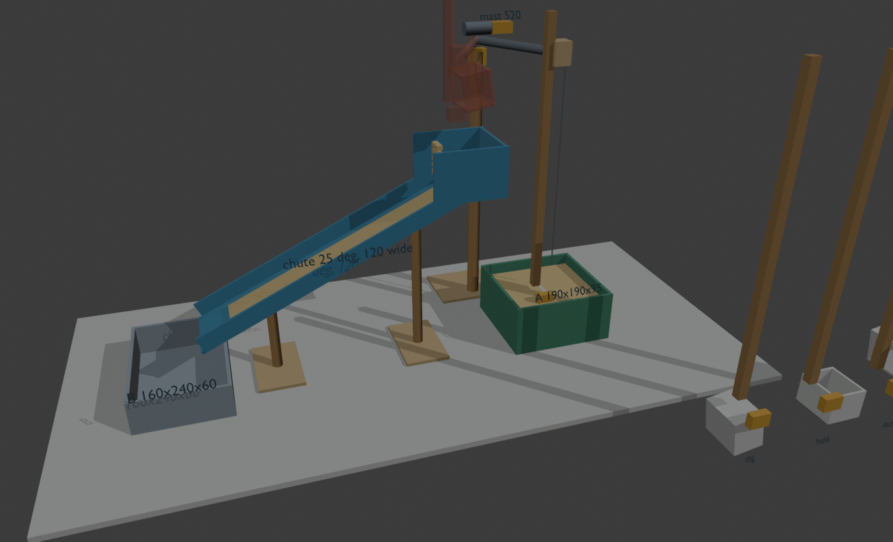
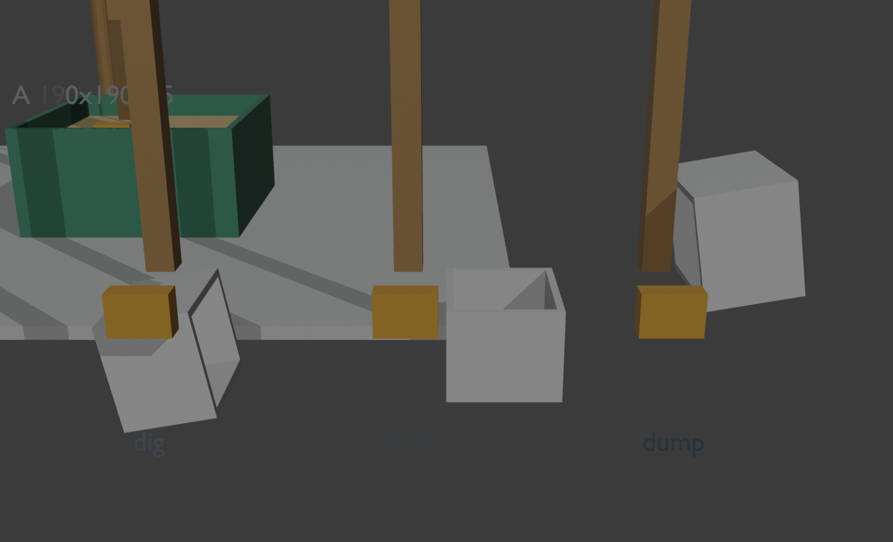

<title>Scoop Crane Build</title>
<meta name="claude:viewport-fit-sides" content="cover">
<link rel="stylesheet" href="https://fonts.googleapis.com/css2?family=Archivo+Narrow:wght@500;700&family=IBM+Plex+Sans:wght@400;600&family=IBM+Plex+Mono:wght@400;600&display=swap">
<style>
/* Layout: workshop manual — one column, numbered build tracks, drawings at real proportions in mm */
:root{
 --bg:#f3f4f1;--paper:#ffffff;--fg:#1c2421;--muted:#5d6a65;--line:#cfd6d2;
 --kline:#2c6e9b;--wood:#9a6a32;--sand:#c99a3c;--servo:#d9822b;--a:#2f6b4f;--b:#6b7d8c;
 --display:"Archivo Narrow","Arial Narrow",sans-serif;--body:"IBM Plex Sans",system-ui,sans-serif;--mono:"IBM Plex Mono",ui-monospace,monospace;
}
@media (prefers-color-scheme:dark){:root:not([data-theme="light"]){
 --bg:#141a18;--paper:#1c2421;--fg:#e6ebe8;--muted:#9aa8a2;--line:#33403b;
 --kline:#5aa3d6;--wood:#c8955a;--sand:#e0b65c;--servo:#f0a050;--a:#5fb08a;--b:#98aab9;color-scheme:dark}}
:root[data-theme="dark"]{
 --bg:#141a18;--paper:#1c2421;--fg:#e6ebe8;--muted:#9aa8a2;--line:#33403b;
 --kline:#5aa3d6;--wood:#c8955a;--sand:#e0b65c;--servo:#f0a050;--a:#5fb08a;--b:#98aab9;color-scheme:dark}
body{background:var(--bg);color:var(--fg);font:15px/1.55 var(--body);
 padding-left:max(16px,env(safe-area-inset-left,0px));padding-right:max(16px,env(safe-area-inset-right,0px));padding-block:24px 64px}
main{max-width:860px;margin:0 auto;display:grid;gap:36px}
h1,h2,h3{font-family:var(--display);text-wrap:balance;margin:0;line-height:1.15}
h1{font-size:2.4rem;letter-spacing:-.01em}
h2{font-size:1.6rem;border-bottom:2px solid var(--fg);padding-bottom:6px}
h3{font-size:1.15rem}
p{margin:0;max-width:68ch}
.lede{color:var(--muted);font-size:1.05rem}
section{display:grid;gap:16px}
.mono,code{font-family:var(--mono);font-size:.9em}
figure{margin:0;background:var(--paper);border:1px solid var(--line);border-radius:6px;padding:12px;display:grid;gap:8px}
figcaption{color:var(--muted);font-size:.85rem}
.scroll{overflow-x:auto}
svg text{font-family:var(--mono);fill:var(--fg)}
.photos{display:grid;grid-template-columns:repeat(auto-fit,minmax(260px,1fr));gap:12px}
.photos img{border-radius:4px;display:block}
table{border-collapse:collapse;width:100%;font-size:.92rem;font-variant-numeric:tabular-nums}
th,td{text-align:left;padding:7px 10px;border-bottom:1px solid var(--line);vertical-align:top}
th{font-family:var(--display);font-size:.8rem;letter-spacing:.06em;text-transform:uppercase;color:var(--muted)}
td.n{text-align:right;white-space:nowrap}
tr.total td{font-weight:600;border-top:2px solid var(--fg)}
.opt td{color:var(--muted)}
.tracks{display:grid;grid-template-columns:repeat(auto-fit,minmax(min(100%,380px),1fr));gap:16px}
.track{background:var(--paper);border:1px solid var(--line);border-radius:6px;padding:16px;display:grid;gap:10px;align-content:start;min-width:0}
.track h3{display:flex;gap:10px;align-items:baseline}
.tag{font-family:var(--mono);font-size:.75rem;padding:2px 7px;border-radius:3px;color:var(--paper);background:var(--fg)}
.t-chute .tag{background:var(--kline)}.t-mast .tag{background:var(--wood)}.t-scoop .tag{background:var(--servo)}.t-elec .tag{background:var(--a)}
ol{margin:0;padding-left:22px;display:grid;gap:6px}
li{max-width:66ch}
.warn{border-left:4px solid var(--servo);padding:8px 12px;background:var(--paper);border-radius:0 4px 4px 0}
.cycle{display:grid;grid-template-columns:repeat(auto-fit,minmax(150px,1fr));gap:10px;counter-reset:c}
.cycle div{background:var(--paper);border:1px solid var(--line);border-radius:6px;padding:10px 12px;font-size:.9rem}
.cycle b{display:block;font-family:var(--display);font-size:1rem}
</style>

<main>
<header style="display:grid;gap:8px">
 <p class="mono" style="color:var(--muted)">O(1/n) · SciTeCh '26 · Team Design · A → B</p>
 <h1>Grua de copo: guia de construção</h1>
 <p class="lede">Um copo de K-line num servo, na ponta de uma ripa. A ripa sobe e desce com um guincho, um braço roda 57° até à tremonha e uma rampa a 25° leva a areia até B. Pensado para 4 pessoas em paralelo, ~2 h de construção.</p>
</header>

<section>
 <h2>Como fica</h2>
 <div class="photos">
  <figure><figcaption>Vista geral. Opaco: o copo a cavar em A. Transparente: em cima da tremonha, a despejar.</figcaption></figure>
  <figure><figcaption>Copo na ponta da ripa: <b>dig</b> (de lado), <b>hold</b> (direito), <b>dump</b> (virado).</figcaption></figure>
 </div>
 <figure class="scroll">
  <svg viewBox="60 -640 1000 720" width="100%" style="min-width:620px" role="img" aria-label="Vista lateral com medidas em milímetros">
   <line x1="80" y1="0" x2="1040" y2="0" stroke="var(--muted)" stroke-width="3"/>
   <!-- B -->
   <polyline points="120,-60 120,0 280,0 280,-60" fill="none" stroke="var(--b)" stroke-width="5"/>
   <text x="160" y="40" font-size="20">B (60 alt.)</text>
   <!-- A + sand -->
   <rect x="786" y="-74" width="178" height="68" fill="var(--sand)" opacity=".55"/>
   <polyline points="780,-95 780,0 970,0 970,-95" fill="none" stroke="var(--a)" stroke-width="5"/>
   <text x="830" y="40" font-size="20">A (95 alt.)</text>
   <!-- chute -->
   <line x1="240" y1="-90" x2="760" y2="-332" stroke="var(--kline)" stroke-width="7"/>
   <polyline points="635,-387 635,-300 M760,-297 760,-387" fill="none" stroke="var(--kline)" stroke-width="4"/>
   <line x1="635" y1="-387" x2="760" y2="-387" stroke="var(--kline)" stroke-width="2" stroke-dasharray="6 6"/>
   <text x="600" y="-405" font-size="18" fill="var(--kline)">tremonha</text>
   <path d="M340,-90 A100,100 0 0 0 330,-132" fill="none" stroke="var(--fg)"/>
   <line x1="240" y1="-90" x2="360" y2="-90" stroke="var(--fg)" stroke-dasharray="4 4"/>
   <text x="345" y="-100" font-size="20">25°</text>
   <text x="160" y="-100" font-size="18">90</text>
   <text x="455" y="-300" font-size="18">fundo 332 aqui →</text>
   <!-- posts -->
   <line x1="360" y1="0" x2="360" y2="-146" stroke="var(--wood)" stroke-width="10"/>
   <line x1="620" y1="0" x2="620" y2="-267" stroke="var(--wood)" stroke-width="10"/>
   <text x="372" y="-40" font-size="18">146</text><text x="632" y="-40" font-size="18">267</text>
   <!-- mast + arm -->
   <line x1="787" y1="0" x2="787" y2="-520" stroke="var(--wood)" stroke-width="10"/>
   <line x1="760" y1="-525" x2="890" y2="-525" stroke="var(--wood)" stroke-width="8"/>
   <rect x="770" y="-552" width="34" height="18" fill="var(--servo)"/>
   <text x="700" y="-570" font-size="18">mastro 520</text>
   <!-- lowered scoop lath -->
   <line x1="875" y1="-87" x2="875" y2="-600" stroke="var(--wood)" stroke-width="7"/>
   <rect x="862" y="-545" width="26" height="40" fill="none" stroke="var(--fg)" stroke-width="2"/>
   <rect x="866" y="-92" width="22" height="14" fill="var(--servo)"/>
   <polygon points="875,-75 875,-15 825,-15 825,-75" fill="none" stroke="var(--fg)" stroke-width="3"/>
   <text x="900" y="-300" font-size="18">ripa 500</text>
   <text x="900" y="-275" font-size="16" fill="var(--muted)">desliza na manga</text>
   <!-- dimension gap -->
   <line x1="280" y1="60" x2="780" y2="60" stroke="var(--muted)"/>
   <text x="470" y="55" font-size="18" fill="var(--muted)">500 entre A e B</text>
  </svg>
  <figcaption>Vista lateral, medidas em mm (frente da arena; o mastro fica 65 mm atrás da parede de trás de A). Alturas medidas desde o chão da arena.</figcaption>
 </figure>
</section>

<section>
 <h2>Comprar</h2>
 <p>Preços do <span class="mono">store.json</span>; confirma na loja (o saldo visto da última vez foi 905).</p>
 <div class="scroll"><table>
  <thead><tr><th>Item</th><th>Material</th><th>Qtd</th><th>Para quê</th><th class="n">Créditos</th></tr></thead>
  <tbody>
   <tr><td class="mono">160</td><td>Kit Eletrónica (2 DC, 1 servo, driver, Arduino)</td><td>1</td><td>Guincho (DC), copo (servo), L298N, Uno</td><td class="n">250</td></tr>
   <tr><td class="mono">170</td><td>Motor Servo</td><td>1</td><td>Rodar o braço</td><td class="n">50</td></tr>
   <tr><td class="mono">121</td><td>Ripas de madeira quadradas</td><td>4</td><td>Mastro, ripa do copo, 2 pés da rampa, braço</td><td class="n">120</td></tr>
   <tr><td class="mono">129</td><td>K-line 100×70×0,5</td><td>1</td><td>Rampa, tremonha, copo</td><td class="n">25</td></tr>
   <tr><td class="mono">125</td><td>Contraplacado 30×30×0,5</td><td>2</td><td>Bases, topo do mastro, emendas</td><td class="n">60</td></tr>
   <tr><td class="mono">157</td><td>Tubos de cola quente</td><td>2</td><td>Montagem toda</td><td class="n">60</td></tr>
   <tr><td class="mono">142</td><td>Roldana com parafuso</td><td>1</td><td>Ponta do braço</td><td class="n">15</td></tr>
   <tr><td class="mono">128</td><td>Cavilhas de madeira 20 cm</td><td>1</td><td>Tambor do guincho</td><td class="n">20</td></tr>
   <tr><td class="mono">192</td><td>Fio branco grosso</td><td>1</td><td>Fio do guincho (não estica)</td><td class="n">25</td></tr>
   <tr><td class="mono">189</td><td>Paus de gelado</td><td>1</td><td>Manga onde a ripa desliza</td><td class="n">15</td></tr>
   <tr><td class="mono">185</td><td>Abraçadeiras</td><td>2</td><td>Prender motor e servos</td><td class="n">20</td></tr>
   <tr><td class="mono">161</td><td>Bateria 9V</td><td>2</td><td>Uma para o Arduino, outra para o L298N</td><td class="n">40</td></tr>
   <tr><td class="mono">179</td><td>Jumpers M-F</td><td>5</td><td>Extensões dos cabos dos servos</td><td class="n">50</td></tr>
   <tr><td class="mono">177</td><td>Jumpers M-M</td><td>3</td><td>Ligações no L298N / Arduino</td><td class="n">30</td></tr>
   <tr><td class="mono">174</td><td>Microswitch</td><td>1</td><td>Fim de curso em cima: o guincho sabe onde está</td><td class="n">20</td></tr>
   <tr class="total"><td></td><td>Essencial</td><td></td><td></td><td class="n">800</td></tr>
   <tr class="opt"><td class="mono">173</td><td>Botão grande</td><td>1</td><td>Botão de arranque do ciclo</td><td class="n">25</td></tr>
   <tr class="opt"><td class="mono">132</td><td>Parafusos</td><td>1</td><td>Se a cola quente não aguentar o mastro</td><td class="n">20</td></tr>
  </tbody>
 </table></div>
 <p class="warn">Se o kit já trouxer jumpers ou bateria, não compres os 177/179/161. Ferramentas: x-ato, régua, serrote pequeno para as ripas, pistola de cola quente.</p>
</section>

<section>
 <h2>Cortes</h2>
 <div class="photos">
 <figure class="scroll">
  <svg viewBox="0 0 420 300" width="100%" role="img" aria-label="Planificação do copo em K-line">
   <g fill="none" stroke="var(--servo)" stroke-width="2">
    <rect x="150" y="100" width="105" height="90"/>
    <rect x="150" y="25" width="105" height="75"/>
    <rect x="150" y="190" width="105" height="75"/>
    <rect x="75" y="107" width="75" height="75"/>
    <rect x="255" y="107" width="75" height="75"/>
   </g>
   <text x="165" y="150" font-size="13">fundo 70×60</text>
   <text x="162" y="68" font-size="13">trás 70×50</text>
   <text x="158" y="232" font-size="13">frente 70×50</text>
   <text x="80" y="148" font-size="12">lado</text><text x="80" y="163" font-size="12">50×50</text>
   <text x="262" y="148" font-size="12">lado</text><text x="262" y="163" font-size="12">50×50</text>
   <text x="10" y="290" font-size="12" fill="var(--muted)">K-line 5 mm · paredes coladas por cima do fundo</text>
  </svg>
  <figcaption>Copo: 5 peças de K-line. Aberto só em cima, leva ~200 ml.</figcaption>
 </figure>
 <div class="scroll"><table>
  <thead><tr><th>Peça</th><th>Material</th><th>Medida (mm)</th></tr></thead>
  <tbody>
   <tr><td>Fundo da rampa</td><td>K-line</td><td class="mono">600 × 120</td></tr>
   <tr><td>Abas da rampa ×2</td><td>K-line</td><td class="mono">600 × 30</td></tr>
   <tr><td>Lados da tremonha ×2</td><td>K-line</td><td class="mono">130 × 90</td></tr>
   <tr><td>Fundo da tremonha</td><td>K-line</td><td class="mono">120 × 90</td></tr>
   <tr><td>Mastro</td><td>Ripa 400 + 120</td><td class="mono">520</td></tr>
   <tr><td>Ripa do copo</td><td>Ripa 400 + 100</td><td class="mono">500</td></tr>
   <tr><td>Pés da rampa</td><td>Sobras das 2 ripas</td><td class="mono">146 e 267</td></tr>
   <tr><td>Braço</td><td>Ripa</td><td class="mono">240</td></tr>
   <tr><td>Base do mastro</td><td>Contraplacado</td><td class="mono">150 × 150</td></tr>
   <tr><td>Bases dos pés ×2</td><td>Contraplacado</td><td class="mono">80 × 140</td></tr>
   <tr><td>Topo do mastro</td><td>Contraplacado</td><td class="mono">60 × 60</td></tr>
   <tr><td>Emendas ×4</td><td>Contraplacado</td><td class="mono">30 × 100</td></tr>
  </tbody>
 </table></div>
 </div>
</section>

<section>
 <h2>Montar: 4 frentes em paralelo</h2>
 <div class="tracks">
  <div class="track t-chute"><h3><span class="tag">1</span>Rampa e tremonha</h3>
   <ol>
    <li><b>Primeiro teste (5 min):</b> põe areia num retalho de K-line a 25°. Se não escorregar, sobe para 30° e avisa a frente 2 (o mastro cresce ~45 mm).</li>
    <li>Cola as 2 abas de 30 mm ao longo do fundo de 600 × 120: um U.</li>
    <li>Na ponta de cima, cola os 2 lados e o fundo da tremonha (90 mm de altura). A areia entra por cima.</li>
    <li>Cola cada pé (146 e 267) à sua base de 80 × 140.</li>
    <li>Pousa a rampa nos pés a 360 e 620 mm da esquerda da arena: a saída fica 40 mm por dentro de B, a tremonha a 20 mm da parede esquerda de A.</li>
   </ol></div>
  <div class="track t-mast"><h3><span class="tag">2</span>Mastro, braço e guincho</h3>
   <ol>
    <li>Emenda 400 + 120 com 2 placas de 30 × 100 coladas dos dois lados: mastro de 520.</li>
    <li>Cola o mastro no centro da base de 150 × 150. Cola o topo de 60 × 60 em cima.</li>
    <li>Prende o <b>servo 170</b> encostado ao mastro, com o eixo para cima à face do topo.</li>
    <li>Cola o braço de 240 ao horn: 180 mm para a frente do eixo, 60 mm para trás. O braço assenta no topo de contraplacado (é o topo que aguenta o peso, não o servo).</li>
    <li>Na ponta da frente, aparafusa a <b>roldana</b>. Logo atrás, a manga (frente 3).</li>
    <li>Na parte de trás do braço, prende o <b>motor DC</b> com abraçadeiras e cola um bocado de cavilha ao eixo: é o tambor. Também serve de contrapeso.</li>
    <li>Mastro na arena: 87 mm à esquerda do centro de A e 65 mm atrás da parede de trás de A. Põe as baterias e o Arduino em cima da base: o peso segura o mastro.</li>
   </ol></div>
  <div class="track t-scoop"><h3><span class="tag">3</span>Copo, ripa e manga</h3>
   <ol>
    <li>Corta as 5 peças do copo e cola as paredes por cima do fundo.</li>
    <li>Emenda 400 + 100: ripa de 500.</li>
    <li>Cola o <b>servo do kit</b> na ponta de baixo da ripa, com o eixo na horizontal.</li>
    <li>Cola a parede de trás do copo ao horn, pela aresta de cima. Testa à mão: o copo tem de rodar de "de lado" até "virado ao contrário" sem bater na ripa.</li>
    <li>Manga: 4 paus de gelado à volta da ripa, colados entre si (põe uma folha de papel à volta da ripa enquanto colas, para ter folga). Tira a ripa e cola a manga na ponta do braço.</li>
    <li>Ata o fio na ripa, 60 mm acima do servo. Passa-o pela roldana até ao tambor.</li>
   </ol></div>
  <div class="track t-elec"><h3><span class="tag">4</span>Eletrónica</h3>
   <div class="scroll"><table>
    <thead><tr><th>Peça</th><th>Ligação</th></tr></thead>
    <tbody>
     <tr><td>Servo do copo</td><td class="mono">sinal D9 · 5V · GND</td></tr>
     <tr><td>Servo do braço</td><td class="mono">sinal D10 · 5V · GND</td></tr>
     <tr><td>Guincho (motor A)</td><td class="mono">ENA D5 · IN1 D7 · IN2 D8</td></tr>
     <tr><td>Botão arranque</td><td class="mono">D2 → GND</td></tr>
     <tr><td>Microswitch topo</td><td class="mono">NO → D3 · COM → GND</td></tr>
     <tr><td>Bateria 9V #1</td><td class="mono">L298N 12V/GND</td></tr>
     <tr><td>Bateria 9V #2</td><td class="mono">Arduino Vin/GND</td></tr>
    </tbody>
   </table></div>
   <ol>
    <li>Os servos tiram 5V do <b>5V do L298N</b>, não do Arduino (2 servos a puxar fazem o Arduino reiniciar).</li>
    <li>GND comum: L298N, Arduino e servos.</li>
    <li>Cabo do servo do copo: 3 jumpers M-F em série, ~60 cm, presos à ripa com fita.</li>
    <li>D10 deixa de ser o IN3 do motor B: o motor B não é usado.</li>
    <li>Microswitch colado por baixo da manga. Cola um batente (bocado de contraplacado) na ripa, à altura em que o copo já passa a tremonha: quando a ripa sobe, o batente carrega no microswitch.</li>
   </ol></div>
 </div>
</section>

<section>
 <h2>Um ciclo</h2>
 <div class="cycle">
  <div><b>1 · Descer</b>Braço sobre A, copo de lado (dig). Guincho desce até a ripa afrouxar.</div>
  <div><b>2 · Encher</b>Servo do copo roda dig → hold (~80°). O copo varre a areia e fica direito.</div>
  <div><b>3 · Subir</b>Guincho sobe até o copo passar a tremonha (~370 mm de curso).</div>
  <div><b>4 · Rodar</b>Servo do braço 57°, devagar. Espera 1 s.</div>
  <div><b>5 · Despejar</b>Copo roda hold → dump (~100°). A areia cai na tremonha e desce a rampa.</div>
  <div><b>6 · Voltar</b>Copo para dig, braço volta a A. Repete. ~10 s por ciclo, 15–20 ciclos para encher B.</div>
 </div>
 <p class="warn">O guincho sobe sempre até ao microswitch e desce por tempo a partir daí (2,5 s, a calibrar). Calibra pelo Serial (9600) sem reprogramar: <span class="mono">s100</span> = ângulo do copo, <span class="mono">a61</span> = ângulo do braço, <span class="mono">u</span>/<span class="mono">d</span> = guincho 200 ms, <span class="mono">g</span> = começar, <span class="mono">x</span> = parar. Ângulos de partida: copo dig 180 / hold 100 / dump 0; braço A ≈ 119, tremonha ≈ 61.</p>
</section>

<section>
 <h2>Testar por esta ordem</h2>
 <ol>
  <li>Areia na K-line a 25° (antes de colar a rampa).</li>
  <li>Copo à mão na areia: o servo consegue rodá-lo de dig para hold dentro de A? Se não, desce menos (3 cm).</li>
  <li>Guincho sobe a ripa com o copo cheio sem patinar no tambor.</li>
  <li>Braço roda sem o mastro tombar.</li>
  <li>Ciclo completo com o código.</li>
 </ol>
</section>
</main>
